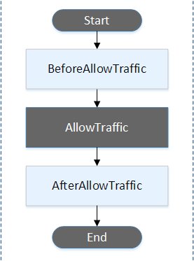

DevOps & CI/CD basics
DevOps = Dev + SysOps
手法
- マイクロサービスアーキテクチャ
- Infrastructure as Code
- CI/CD パイプライン
マイクロサービスアーキテクチャ
- two-pizza teams
- 2つのピザを食べ切れるくらいの規模(6~8 名)にチームとサービスを分解。
- 俊敏性を高めるため。
- APIによる疎結合のサービス連携
CI/CD
Continuous Integration
- コミットと同時に自動でビルド・テストが走る。元来はテスト自動化が動機っぽい。
- Build して artifact が保存されるまで。
- UT 含むが(たぶん)デプロイして実行するインテグレーションテストは含まない。
Continuous Delivery vs. Continuous Deployment
- Continuous Delivery: 人が確認・承認した上でデプロイ
- Continuous Deployment は人手のプロセスがなく自動デプロイされる。
- BB: AWS Code Services: https://d1.awsstatic.com/webinars/jp/pdf/services/20170322_AWS-BlackBelt-CodeCommit-CodeBuild.pdf
- BB: AWS Code Services Part 2: https://d1.awsstatic.com/webinars/jp/pdf/services/20170628_AWS-BlackBelt_CodeSeries_CodeDeploy_and_CodePipeline.pdf
AWS CodeCommit
特徴
- フルマネージドの Git サービス。
- サイズが制限なく、コードは AWS アカウントにプライベート。
- 送信時 (SSH/HTTPS) および保存時 (KMS) の暗号化。
- IAM ロール, CloudWatch, CloudTrail により他の AWS サービスとの連携が容易
- サードパーティーと連携可能
- Ref. https://pages.awscloud.com/rs/112-TZM-766/images/20201020_BlackBelt_AWS_CodeCommit_AWS_CodeArtifact.pdf

使い方
- AWS CLI かコンソールで CodeCommit 上にリモートレポジトリを作る。
- あとの git clone, push, pull などの作業は普通の Git と同じ。
認証方法
- IAM コンソールで認証情報を登録する。
- SSH: キーペアを作り IAM ユーザに公開鍵を登録。
- HTTPS: IAM ユーザの Git 認証情報 (ユーザ名/パスワード) を生成する。
認証情報ヘルパー
- 認証情報ヘルパーを使えば aws-cli 経由でプロファイルに指定したユーザの権限で認証してくれるので、認証情報の登録が不要。
git config --global credential.helper '!aws --profile dev codecommit credential-helper $@'
git config --global credential.UseHttpPath true
- ~/.gitconfig に次のように記載される。
[credential]
helper = !aws --profile dev codecommit credential-helper $@
UseHttpPath = true
- なお、SSH URL でのクローンは認証情報が求められ出来なかった。
- Ref. https://docs.aws.amazon.com/ja_jp/codecommit/latest/userguide/setting-up-https-unixes.html
- NOTE: Mac, Windows とも 403 エラーになる。
- https://docs.aws.amazon.com/ja_jp/codecommit/latest/userguide/troubleshooting-ch.html
- Mac の場合、Git が Keychain Access で認証情報を保存するが 15 分で期限切れになるため。一番簡単な対応方法は ~/.gitconfig で次のように空の helper を指定する。
[credential]
helper =
helper = !aws --profile CodeCommitProfile codecommit credential-helper $@
UseHttpPath = true
- AWSCodeCommitFullAccess, AWSCodeCommitPowerUser, AWSCodeCommitReadOnly などの AWS マネージドポリシーがあるが、これらのポリシーではアカウントの全リポジ トリへのアクセスが許可されてしまう。
- ベストプラクティスは、個々のリポジトリ固有のカスタマーマネージドポリシーを作成すること。
- リソースポリシーはサポートされていない。プリンシパルにマネージドポリシーをアタッチし、Resource セクションに リポジトリのARN を指定する。
master ブランチへの push や merge を拒否するポリシーの例:
https://docs.aws.amazon.com/codecommit/latest/userguide/how-to-conditional-branch.html
{
"Version": "2012-10-17",
"Statement": [
{
"Effect": "Deny",
"Action": [
"codecommit:GitPush",
"codecommit:DeleteBranch",
"codecommit:PutFile",
"codecommit:MergeBranchesByFastForward",
"codecommit:MergeBranchesBySquash",
"codecommit:MergeBranchesByThreeWay",
"codecommit:MergePullRequestByFastForward",
"codecommit:MergePullRequestBySquash",
"codecommit:MergePullRequestByThreeWay"
],
"Resource": "arn:aws:codecommit:*:*:*",
"Condition": {
"StringEqualsIfExists": {
"codecommit:References": [
"refs/heads/main"
]
},
"Null": {
"codecommit:References": "false"
}
}
}
]
}
CodeCommit の暗号化
- デフォルトで AWS 管理キー (AWS managed CMKs) で暗号化される。
外部レポジトリからのマイグレーション
- CodeCommit にリポジトリを作成し、外部リポジトリを一旦ローカルに clone してから CodeCommit リポジトリを remote に設定して push する。
プルリクエスト
- AWS コンソールまたは AWS CLI から作成できる。
- 送信元ブランチのコンテンツを、マージ先ブランチ (送信先ブランチ) と比較する。
- プルリクのマージの承認ルールというのが追加されている。
クライアント側フック - リポジトリの .git/hooks サブディレクトリにインストールされる。
サーバ側フック - CodeCommit ではサーバ側のフックは CodeCommit イベントで処理される。
CodeCommit リポジトリトリガー
- コード Push などのリポジトリイベントで SNS, Lambda をトリガー。
- 関連リソースは CodeCommit と同じリージョンにある必要がある
- https://docs.aws.amazon.com/ja_jp/codecommit/latest/userguide/how-to-notify.html
- Lambda 側からトリガーを追加してもここに反映される:


- https://docs.aws.amazon.com/codecommit/latest/userguide/how-to-notify-lambda.html
通知ルール
- SNS か AWS Chatbot に通知を投げる。
-
- https://docs.aws.amazon.com/ja_jp/codecommit/latest/userguide/how-to-repository-email.html
- 通知ルールは Code シリーズ共通のリソース。通知ルールを使うと Code シリーズから CodeStar サービスにイベントを送る EventBridge ルールが自動で追加される。
- 
CodeBuild/CodePipeline 連携
- EventBridge ルールを作成してイベントソースを CodeCommit にする。
- コード変更時にビルドをかけるには "CodeCommit Repository State Change" イベント。
- ターゲットを CodeBuild プロジェクトや CodePipeline パイプラインの ARN とする。
- https://docs.aws.amazon.com/ja_jp/codepipeline/latest/userguide/pipelines-trigger-source-repo-changes-cli.html
{
"source": ["aws.codecommit"],
"detail-type": ["CodeCommit Repository State Change"]
}
CloudTrail 連携
- CodeCommit API コールをキャプチャして S3 バケットに保存可能
ブランチ戦略
- メインブランチ、開発ブランチ、Feature ブランチ、リリースブランチ、修正ブランチ等、複数のブランチを使い分けるモデル。
- コミットがあちこちのブランチに散らばるので管理が大変になりがち。
- https://aws.amazon.com/jp/blogs/devops/implementing-gitflow-using-aws-codepipeline-aws-codecommit-aws-codebuild-and-aws-codedeploy/
トランクベース開発
- トランクと呼ばれる 1 つの共有ブランチにコミットの大半をマージする。
- リリース時はリリースブランチを切り、次のリリースまでの短期間使用される。
- ほとんどのコミットはトランクに行われ、リリースブランチにマージされる。
- Amazon では開発者がコミットをトランクに定期的に (理想的には 1 日数回) マージする「トランクベース開発」により継続的インテグレーションを実践するよう強く推奨。
- チームが小さな変更を定期的にマージできる場合、マージの複雑さと労力を最小限に抑えることができる。
- トランクベースの継続的インテグレーション・デリバリーを組み合わせることで、本番環境に変更を加えるまでのリードタイ ムを短縮できる。
AWS CodeBuild
概要
- CI サーバ (Build/Test) のマネージドサービス。
- ソースコード取得
- CodeCommit, S3, GitHub
- ビルド環境
- Docker イメージで用意される。
- ビルドコマンド
- buildspec.yml に記述。
- ビルドコマンド出力はログに送信される。
- アーティファクト
- S3 バケットにアップロード。


ビルドプロジェクト
ソース、ビルド環境、buildspec ファイル名、アーティファクト (出力先 S3 バケット名) 等を指定する。
Ref. https://docs.aws.amazon.com/ja_jp/codebuild/latest/userguide/create-project-console.html
ソース
- ソースプロバイダーの種類
- S3, CodeCommit, GitHub, GitHub Enterprise, Bitbucket

ビルド環境
- ビルドサーバの Docker イメージを指定する。
- マネージド型イメージ
- CodeBuild の Docker イメージレポジトリで管理されたイメージ。
- カスタムイメージ
- Docker Hub, ECR にあるイメージを指定。
- マネージド型イメージで提供される OS
- Amazon Linux 2, Ubuntu, Windows Server のイメージが提供されている。
- Windows Server は us-east 等、特定リージョンのみ。
- Amazon Linux 2, Ubuntu, Windows Server のイメージが提供されている。
- Ref.
- サービスロール
- コンテナにサービスロールがアタッチされる。
- タイムアウト
- 最長8時間までのタイムアウトを指定できる。
- Lambda で出来ない時間のかかるパフォーマンステスト等を実施できる。
- VPC
- ビルド環境に VPC を指定して VPC 内で実行して内部のリソースへのアクセスも可能。
- 環境変数
- 環境変数の上書き指定。SSM パラメータストアからの取得も指定可能。
アーティファクト
- 保存先の S3 バケットを指定する。(オプショナル)
- 暗号化
- デフォルトで S3-KMS で用いられる AWS managed CMK を使って暗号化する。
- バケットのデフォルト暗号化を他の設定 SSE-S3 にしていても CodeBuiild 側で KMS 暗号化を行う。
- Customer managed CMK もここで指定できる。
- デフォルトで S3-KMS で用いられる AWS managed CMK を使って暗号化する。
ログ
- オプショナルで CloudWatch Log と S3 バケットにログを保存できる。
- CodeBuild コンソールに出力されるログは環境が終了すると消える。
ビルドキャッシュ
- アーティファクトセクションのキャッシュタイプで有効化。
- ビルドツールや依存モジュールのダウンロードやビルド時間を短縮できる。
- 対象ファイルは buildspec.yaml の cache セクションで指定。
- S3
- It stores the cache in an Amazon S3 bucket that is available across multiple build hosts.
- This is a good option for small to intermediate sized build artifacts that are more expensive to build than to download.
- This is not the best option for large build artifacts because they can take a long time to transfer over your network, which can affect build performance. It also is not the best option if you use Docker layers.
- Local
- Local caching stores a cache locally on a build host that is available to that build host only.
- This is a good option for intermediate to large build artifacts because the cache is immediately available on the build host.
- DockerLayerCache ... コンテナイメージのビルドのためのキャッシュ
- SourceCache ... .git メタデータのキャッシュ
- CustomCache ... buildspec.yaml で指定するキャッシュ

- S3 から手動で削除してキャッシュを失効させる。または S3 ライフサイクルポリシーを使用して キャッシュを失効させることも可能。
- プロジェクトを更新してキャッシュ動作をオーバーライドする。 プロジェクトを更新するには、AWS コンソール、CLI、 SDK を使用します。新しい InvalidateProjectCache API を使用し てキャッシュ設定を無効化することも可能です。この API により新しい InvalidationKey が強制的に生成され、今後のビルドでは空のキャッシュ が渡されることが保証されます。実行中のビルドとの不整合が発生する可 能性があるため、この API では既存のキャッシュの削除が行われません。
- ビルド環境のすべてのフォルダに対してキャッシュを有効にできるが、 ビルド間で頻繁に変更されない依存関係やファイルのみをキャッシュするようにすべき。予期しないアプリケーションの動作を避けるために、設定と機密情報をキャッシュしないようにする。
- https://docs.aws.amazon.com/codebuild/latest/userguide/build-caching.html
- https://aws.amazon.com/jp/blogs/devops/how-to-enable-caching-for-aws-codebuild/

BuildSpec (buildspec.yml)
- ソースの root ディレクトリに配置。(ビルドプロジェクトで異なるパスも指定可能)
- 各ビルドフェーズのコマンド、アーティファクトとして保存するファイルを指定。

- install フェーズ
- runtime-versions でビルドランタイムのインストール指定。

- dotnet, java, golang, php, nodejs, python, ruby をサポート。
- command ブロックで install フェーズでもコマンド実行可能。
- post_build フェーズ
- UT やコンテナのプッシュ等を実施。
- run-as: Linux-user-name
- 全体および各フェーズに指定可能。
- finally ブロック
- 各セクションに指定。command ブロックでエラーがあったときも必ず実行される。
artifact セクション
- artifact として S3 に保存するファイルを指定。
- **/* のようなワイルドカードも使える。
env セクション
- 環境変数設定。パラメータストアからも簡単に取得できる。
env:
variables:
JAVA_HOME: "/usr/lib/jvm/java-8-openjdk-amd64"
parameter-store:
LOGIN_PASSWORD: /CodeBuild/dockerLoginPassword
- pre-define の環境変数も大量にある。
Docker イメージをビルドする buidspec.yaml 例:
- docker login でレポジトリにログイン。
- buidspec.yaml と同じディレクトリの (暗黙に選択される) Dockerfile で docker build を実行。
- post_build で ECR に push する。artifacts セクション不要。
- サービスロールに ECR アクセスの権限が必要。
version: 0.2
phases:
pre_build:
commands:
- echo Logging in to Amazon ECR...
- aws --version
- REPOSITORY_URI=041845206805.dkr.ecr.us-west-2.amazonaws.com/gold-repo
- aws ecr get-login-password --region $AWS_DEFAULT_REGION | docker login --username AWS --password-stdin $REPOSITORY_URI
- COMMIT_HASH=$(echo $CODEBUILD_RESOLVED_SOURCE_VERSION | cut -c 1-7)
- IMAGE_TAG=${COMMIT_HASH:=latest}
build:
commands:
- echo Build started on `date`
- echo Building the Docker image...
- docker build -t $REPOSITORY_URI:latest .
- docker tag $REPOSITORY_URI:latest $REPOSITORY_URI:$IMAGE_TAG
post_build:
commands:
- echo Build completed on `date`
- echo Pushing the Docker images...
- docker push $REPOSITORY_URI:latest
- docker push $REPOSITORY_URI:$IMAGE_TAG
Ref.
- https://docs.aws.amazon.com/codebuild/latest/userguide/build-spec-ref.html#build-spec-ref-syntax
- https://docs.aws.amazon.com/codebuild/latest/userguide/use-case-based-samples.html
ビルドの保護
AWS 管理ポリシー
- AWSCodeBuildAdminAccess – CodeBuild へのフルアクセスを提供。
- AWSCodeBuildDeveloperAccess – CodeBuild へのアクセスを提供するがビルドプロジェクトの管理は許可しない。
- AWSCodeBuildReadOnlyAccess – CodeBuild への読み取り専用アクセス。
- AmazonS3ReadOnlyAccess – CodeBuild が作成するビルド出力 アーティファクトへのアクセス。
IAM ロールでビルドアクションの制御する例
CodePipeline 連携
EventBridge による連携
CodeBuild プロジェクトをターゲットにしたビルド開始
CodeBuild をイベントソースにした Lambda 等との連携:
- CodeBuild Stage Change: IN_PROGRESS, SUCCEEDED, FAILED, STOPPED
- CodeBuild Phase Change: BuildSpec に出てくる各フェーズの遷移
Validating AWS CodeCommit Pull Requests with AWS CodeBuild and AWS Lambda
- CloudWatch Event (=EventBridge) で PR を契機に CodeBuild でコードの自動テストを行い、結果を PR にコメント付与する例。

- CodeCommit をイベントソースとして CodeBuild を開始、CodeBuild をイベントソースとして Lambda で結果を通知。
- Lambda はテスト開始時とテスト結果を PR にコメント追加するのに使用されている。
- https://aws.amazon.com/jp/blogs/devops/validating-aws-codecommit-pull-requests-with-aws-codebuild-and-aws-lambda/
AWS CodeDeploy
- リビジョン(=アーティファクト)取得元
- S3, GitHub のいずれか。
- S3 の場合はデプロイ先 EC2 インスタンスのロールに S3 へのアクセス許可も必要。
- (アーティファクトを各インスタンスのエージェントが pull するため)
- デプロイ先
- EC2/オンプレサーバ (要 CodeDeploy エージェント)
- ECS (Fargate)
- Lambda
リビジョン
デプロイ対象アプリケーションの(AppSpecを含む)パッケージ(の特定バージョン)をリビジョンと呼ぶ。

CodeDeploy によるデプロイの流れ
- あらかじめアプリケーションとデプロイグループを作成しておく。
- S3 (Git) にリビジョンを push する。(aws deploy push)
- デプロイを作成することでデプロイプロセスが開始する。(aws deploy create-deployment)
- この際、アプリケーション名・デプロイグループ・リビジョンの場所を指定する。
- デプロイタイプ (Blue/Green 等) に応じてデプロイメントがスケジュールされ、各インスタンス内のエージェントがリビジョンを pull して AppSpec に従って展開する。
ラボで実行したコマンド例
S3 バケットを作成後、ローカルにあるアプリケーションをリビジョンとして S3 バケットに push:
aws deploy push --application-name CodeDeploy-Demo --source HeartBeat-App --s3-location s3://$bucketName/HeartBeat-App.zip
- ローカルディレクトリのファイルが zip されて S3 にアップロードされる。
- 裏で RegisterApplicationRevision コマンドで S3 のオブジェクトとリビジョンの紐付けを行なっている。
- S3 バケットのバージョニングを有効にしておけば push するごとにバージョンが上がってリビジョンと紐づけられる。
リビジョンをデプロイ:
aws deploy create-deployment --application-name CodeDeploy-Demo --deployment-group-name HeartBeat-Deployment --deployment-config-name CodeDeployDefault.AllAtOnce --description "Initial Deployment" --s3-location bucket=$bucketName,key=HeartBeat-App.zip,bundleType=zip
アプリケーション更新の流れも同じ
新しいリビジョンを同じ S3 バケットにプッシュ:
aws deploy push --application-name CodeDeploy-Demo --source HeartBeat-App --s3-location s3://$bucketName/HeartBeat-App.zip
同じコマンドでデプロイ:
aws deploy create-deployment --application-name CodeDeploy-Demo --deployment-group-name HeartBeat-Deployment --deployment-config-name CodeDeployDefault.AllAtOnce --description "Updated Deployment" --s3-location bucket=$bucketName,key=HeartBeat-App.zip,bundleType=zip
アプリケーション
デプロイ先プラットフォームを指定して作成する
デプロイグループ
EC2/オンプレではターゲットに以下が選択できる。1つのデプロイグループ内に複数の組み合わせを指定可能。

EC2/オンプレのインスタンスはタググループで指定できる。

EC2 Auto Scaling グループ
- Auto Scaling グループ内の既存インスタンスにデプロイを実施する。
- スケールアウトで新しいインスタンスが立ち上がる際も自動的に新しいリビジョンのデプロイが行われる。
- インプレースとBlue/Green 両方で Auto Scaling グループを選択可能。
- Blue/Green では Auto Scaling グループ全体の置き換えによるデプロイメントを指定できる。(Ref. AutoScalingReplacingUpdate)
- インスタンスの手動プロビジョンは deployment 作成時に個別にインスタンスを指定することになる。
ECS の場合は ECS クラスター名と ELB を指定。

デプロイタイプ
デプロイグループで指定する。
- EC2: インプレースデプロイ, Blue/Green デプロイ
- オンプレ: インプレースデプロイのみ
- ECS, Lambda: Blue/Green デプロイのみ
Blue/Green ではルーティングの設定を行う:
- EC2 インスタンス/Auto Scaling グループの Blue/Green では ELB の指定が必須
インプレース, Blue/Green ともにデプロイの単位を以下から選択する:

Lambda:

- Canary は2段階。Liner は10%ずつ段階的に。
ECS:

トリガー (通知)
- デプロイグループ設定でイベントを SNS 通知するトリガーを設定できる。
- デプロイグループごとに最大 10 個。

- CLI での表示例:
AppSpec File (appspec.yml)
デプロイ処理の定義
- リビジョンの root ディレクトリに配置する。
- CodeDeploy エージェントによって実行される。
例:
version: 0.0
os: windows
files:
- source: Heartbeat.dll
destination: c:\HeartbeatService
- source: HeartbeatService.exe
destination: c:\HeartbeatService
- source: HeartbeatService.exe.config
destination: c:\HeartbeatService
- source: log4net.dll
destination: c:\HeartbeatService
- source: Logger.dll
destination: c:\HeartbeatService
- source: wintail.exe
destination: c:\temp
hooks:
ApplicationStop:
- location: uninstall.ps1
timeout: 30
AfterInstall:
- location: install.ps1
timeout: 30
- location: copywintail.ps1
timeout: 30
Hooks セクション
- デプロイ前後に独自スクリプトや Lambda などを実行可能
- ValidateService で外部 Lambda からアクセスして動作検証など
- timeout: タイムアウト指定
- runas: 実行ユーザ指定
- Hooks で実行するスクリプトもリビジョンにバンドルする。
- EC2 - インプレース:

- Ref. https://docs.aws.amazon.com/ja_jp/codedeploy/latest/userguide/reference-appspec-file-structure-hooks.html
- EC2 - Blue/Green:
- イミュータブルなので Blue 側は BlockTraffic 関連のイベントしか走らない。
- Green の AfterAllowTraffic 後に Blue の BlockTraffic に移行。

プラットフォーム毎に記述内容は異なる。
Lambda の AppSpec
Resource セクション
- ターゲットの Lambda 関数名・エイリアス・現在と移行先のバージョンを指定。
Hooks セクション
- EC2/オンプレインスタンスのように内部でコマンドを実行できる訳ではないので、Hook で呼び出す Lambda 関数名を指定する。
- 
ECS の AppSpec
ECS ではコンテナイメージが別途コンテナディレクトリに登録される必要があるので、AppSpec はコードと一緒に置かず S3 にファイル単体を置いても良い。
- BeforeInstall
- ECS アプリケーションが置き換えタスクセットにイ ンストールされる前に実行。
- AfterInstall
- ECS アプリケーションが置き換えタスクセットにイ ンストールされた後、トラフィック受信前に実行。
- AfterAllowTestTraffic
- 更新後 ECS アプリケーションがテストリスナーからトラフィックを受信すると実行。
- デプロイを続行するかどうか判断するための検証テスト等を実行する。
- デプロイグループで ELB のテストリスナー(オプショナル)を指定しない場合は呼ばれない。
- BeforeAllowTraffic
- 本番トラフィッ クが更新後 ECS アプリケーションに配信される前に実行。
- AfterAllowTraffic
- 本番トラフィックが更新後 ECS ア プリケーションに配信されると実行。
AfterAllowTestTraffic と Test Listener
- CodeDeploy の ECS のデプロイメントでは新しい Task Set と ELB のターゲットグループが作られる。
- AfterAllowTestTraffic のタイミングで Test Listener のルーティング先が新しいターゲットグループになる。
- Test Listener は Production Listener と別ポート (8080) 等でルーティングが異なるリスナー。
- AfterAllowTestTraffic フックの Lambda で Test Listener にリクエストを投げて Validation を実施する。
- https://docs.amazonaws.cn/en_us/codedeploy/latest/userguide/tutorial-ecs-deployment-with-hooks.html
AppSpec 内で利用できる環境変数
- APPLICATION_NAME
- e.g. WordPress_App
- DEPLOYMENT_ID
- e.g. d-AB1CDEF23
- DEPLOYMENT_GROUP_NAME
- e.g. WordPress_DepGroup
- DEPLOYMENT_GROUP_ID
- e.g. b1a2189b-dd90-4ef5-8f40-4c1c5EXAMPLE
- LIFECYCLE_EVENT
- e.g. AfterInstall
Bundle from S3:
- BUNDLE_BUCKET
- e.g. my-s3-bucket
- BUNDLE_KEY
- e.g. WordPress_App.zip
- BUNDLE_VERSION
- e.g. 3sL4kqtJlcpXroDTDmJ+rmSpXd3dIbrHY+MTRCxf3vjVBH40Nr8X8gdRQBpUMLUo
- This variable is only set if the Amazon S3 bucket has object versioning enabled.
- BUNDLE_ETAG
- The object etag for the bundle.
- e.g. b10a8db164e0754105b7a99be72e3fe5-4
Bundle from GitHub:
- BUNDLE_COMMIT
- e.g. d2a84f4b8b650937ec8f73cd8be2c74add5a911ba64df27458ed8229da804a26).
NOTE: カスタム環境変数を渡す方法はない
ロールバック
マニュアルロールバック:
- 以前のリビジョンで新しい deployment を作成してデプロイするだけ。
自動ロールバック:
- デプロイグループの詳細設定で設定可能。
- いずれかのインスタンスでデプロイ失敗かアラーム (CPU 使用率 80% 以上等) が発生した場合に以前のリビジョンにデプロイしなおす。
- アラームを使用する場合、アラームもデプロイグループに指定しておく。
- https://docs.aws.amazon.com/codedeploy/latest/userguide/deployments-rollback-and-redeploy.html#deployments-rollback-and-redeploy-automatic-rollbacks
ポリシー関連

サービスロール
- サービスロールはデプロイグループに指定し、デプロイターゲットへのアクセスを許可する。
- ロールの作成時はスライドの通り信頼ポリシーで CodeDeploy に AssumeRole を許可。
- 次の AWS 管理ポリシーをロールにアタッチする。
- AWSCodeDeployRole:
- インスタンスのタグを読み取る、または EC2 Auto Scaling グループ名により EC2 インスタンスを識別。
- EC2 Auto Scaling グループ、ライフサイクルフック、スケーリングポリシーの読み取り・作成・更新・削除。
- SNS トピックに情報を公開。
- CloudWatch アラームに関する情報を取得。
- ELB の読み取り・更新。
- AWSCodeDeployRoleForECS
- ECS タスクセットの読み取り・更新・削除。
- ELB ターゲットグループ、リスナー、ルールを更新。
- Lambda 関数を呼び出し。
- S3 バケットのリビジョンファイルにアクセス。
- CloudWatch アラームに関する情報を取得。
- SNS トピックに情報を公開。
- AWSCodeDeployRoleForLambda
- Lambda 関数およびエイリアスの読み取り・更新・呼び出し。
- S3 バケットのリビジョンファイルにアクセス。
- CloudWatch アラームに関する情報を取得。
- Amazon SNS トピックに情報を公開。
インスタンスロール
- S3 バケットからリビジョンを取得するため s3:Get*, s3:List* の許可が必要。
CloudWatch Event 連携
ユースケース例
- Use a Lambda function to pass a notification to a Slack channel whenever deployments fail.
- Push data about deployments or instances to a Kinesis stream to support comprehensive, real-time status monitoring via a dashboard.
- Automatically stop, terminate, reboot, or recover Amazon EC2 instances when a deployment or instance event you specify occurs.
- https://docs.aws.amazon.com/codedeploy/latest/userguide/monitoring-cloudwatch-events.html
CodeDeploy エージェント
- EC2, オンプレサーバにインストールする。
- Amazon Linux, Ubuntu, RHEL, Windows Server 向けのバイナリがある。
- OSS なので他の環境にも展開可能。
Windows の EC2 インスタンスに指定する UserData の例:
<powershell>
Read-S3Object -BucketName aws-codedeploy-us-west-2/latest -Key codedeploy-agent.msi -File c:\temp\codedeploy-agent.msi
Start-Sleep -s 60
Start-Process c:\temp\codedeploy-agent.msi '/qn /l**v c:\temp\host-agent-install-log.txt'
</powershell>
- S3 から pull するためインスタンスロールに s3:Get*, s3:List* パーミッションが必要。
- CodeDeploy エンドポイントに HTTPS/443 でアクセスする。
- パブリックサブネットならインターネット経由、プライベートなら VPC エンドポイント経由。
- インスタンス上のインストールログを CloudWatch Logs で見るには CloudWatch を別途インストールする。
オンプレインスタンスの登録
各インスタンス毎に IAM ユーザを作成する方法 (小規模システム)と、 IAM ロールを STS で使う方法 (大規模システム) がある。
CloudDeploy エージェントの設定ファイルに認証情報を設定し、register-on-premises-instance コマンドで CodeDeploy サービスに IAM ユーザまたは STS セッションの ARN を登録する。
IAM ユーザを使用する例:
- ユーザを作成して "s3:Get*", "s3:List*" を許可する。
- ユーザのアクセスキーを取得して CodeDeploy エージェントの設定ファイルに設定する。(エージェントがインストール済なら設定後リスタート)
---
aws_access_key_id: secret-key-id
aws_secret_access_key: secret-access-key
iam_user_arn: iam-user-arn
region: supported-region
- /etc/codedeploy-agent/conf/codedeploy.onpremises.yml
- C:\\ProgramData\\Amazon\\CodeDeploy\\conf.onpremises.yml
- CodeDeploy エージェントをインストール。
- CLI がインストールされた環境で register-on-premises-instance を実行してユーザを登録する。
aws deploy register-on-premises-instance --instance-name AssetTag12010298EX --iam-user-arn arn:aws:iam::444455556666:user/CodeDeployUser-OnPrem
- 登録後はコンソールからオンプレインスタンスが見られるようになる。

- コンソールか CLI でインスタンスにタグを設定する。
- 以降のデプロイグループへの登録等は EC2 インスタンス同様。
AWS CodePipeline
CI/CDパイプラインのオーケストレーション。

ステージ
- パイプラインの各ステージに１つ以上のアクションを追加していく。
- 管理コンソールのウィザードでは次の3ステージが作成される。
- ソースステージ
- ビルドステージ (オプショナル)
- デプロイステージ (オプショナル)
- 少なくとも２つ以上のステージが必要。(ビルド・デプロイ両方ともスキップはできない)
- ステージは後から追加できる。
ソースステージ

- 入力アーティファクトが更新されると自動でパイプラインが起動される。
- CloudWatch Events (EventBridge) で自動的に Codepipeline 呼び出しが行われるようにルールが設定される。
- AWS リソースの CodeCommit, ECR, S3 は CloudWatch Events/EventBridge で監視。
- 外部リソースの GitHub, Bitbucket は CodeStarSourceConnection プロバイダーで Webhook で監視するとのこと。
- 検出オプション「AWS CodePipeline」はポーリングらしい。どういう時に使う？
- 複数のソースプロバイダを指定することもできる。パイプライン発火時は全てのプロバイダから最新のソースを取得する。
- Ref. Source actions and change detection methods:
- https://docs.aws.amazon.com/codepipeline/latest/userguide/pipelines-about-starting.html#change-detection-methods
ビルドステージ (オプショナル)
- ビルドだけでなくテストにも使われる。

デプロイステージ (オプショナル)

- ECS, ECS(Blue/Green) は CodeDeploy 使わなくても直接 CodePipeline に統合されている。
別リージョンのビルド/デプロイプロバイダーを呼び出すことも可能:

アクション
- Approval アクション: 手動承認 → SNS
- SNS 連携でパイプラインのステージに承認アクションを追加できる。
- 必要な IAMアクセス権限を持つユーザによってアクションを承認または拒否するワークフローを設定。
- Codepipeline コンソール上または SNS で通知される URL で Approve/Reject できる。(サブスクライバは任意に追加可能)

- Invoke アクション: Lambda で追加処理を実行できる。
- codepipeline.putJobSuccessResult()/putJobFailureResult() で結果を返す。
- continuationToken パラメーターが Job の識別 ID となる。
- Lambda 実行ロールでこれらのアクションを許可する必要がある:
- codepipeline:PutJobSuccessResult
- codepipeline:PutJobFailureResult
- codepipeline.putJobSuccessResult()/putJobFailureResult() で結果を返す。
パラレルアクションとシーケンシャルアクション

パラレルアクション=アクショングループ

パイプラインのコーディング
- 最初のステージにソースアクションを含める必要がある 。
- 最初のステー ジのみにソースアクションを設定できる。
- ソースアクションのステージの他に 1 つ以上のステージが必要。(=2つ以上のステージが必要)
- パイプライン内のステージ名は一意である必要がある。
- runOrder
- シーケンスの順番。パラレルアクションは同じ runOrder になる。
アーティファクト
各ステージのアーティファクトが S3 に置かれ、次のステージに渡される。S3 バージョンも使用して作成の度にバージョニングされる。

- 各アクションで Input/Output artifacts の名前を指定する。
アーティファクトの暗号化
- CodePipeline はアーティファクトを保管するための S3 バケットを作成し、デフォルトで S3 の AWS 管理キー (aws/s3) を作成して SSE-KMS で暗号化する。
- カスタマー管理キーでないとキーポリシーを変更できずクロスアカウントでの使用ができない。また、削除やローテーションの鍵管理ができないため、カスタマー管理キーの使用が推奨される。
- https://docs.aws.amazon.com/codepipeline/latest/userguide/S3-artifact-encryption.html

クロスリージョンアクション
クロスリージョンでビルドプロバイダー/デプロイプロバイダー等を呼び出すことが可能。
- ソースアクション、サードパーティーアクション、カスタムアクションはクロスリージョン不可。
各リージョンにアーティファクトストア (S3バケット) と SSE-KMS キーが必要となる。
リージョン間でのアーティファクトのコピーが行われる。
クロスリージョンのサービスをデプロイする例:

https://aws.amazon.com/jp/blogs/devops/using-aws-codepipeline-to-perform-multi-region-deployments/
https://docs.aws.amazon.com/codepipeline/latest/userguide/actions-create-cross-region.html
クロスアカウント
パイプラインのある開発アカウントとデプロイ先の本番アカウントでアカウントが分かれているのが普通なので、クロスアカウントアクセスを設定する必要がある。
アカウント A 側リソース:
- アーティファクトが置かれる S3 バケット
- ソースとデプロイステージがあるパイプライン
アカウント B 側リソース:
- CodeDeploy アプリケーション
- EC2 インスタンスがあるデプロイグループ
アカウント A 側のステップ :
- アカウント B の ARN またはアカウント ID を入手。
- パイプラインのリージョンで KMS カスタマーマネージドキーを作成し、キーの使用権限を CodePipeline サービスロールとアカウント B に付与。キーはパイプラインアーティファクトの暗号化に使用される。
- アカウント B に S3 バケットへのアクセスを許可する S3 バケットポリシーを作成。
- アカウント A がアカウント B によって設定されたロールを引き受けるこ とを許可するポリシーを作成し、そのポリシーを CodePipeline サービスロールにアタッチ。
- デフォルトのキーではなく KMS カスタマーマネージドキーを使用 するパイプラインを編集。
アカウント B 側ステップ:
- アカウント A の ARN またはアカウント ID を入手。
- CodeDeploy に設定された EC2 インスタンスロールに適用される、S3 バケットへのアクセスを許可するポリシーを作成。
- CodeDeploy に設定された EC2 インスタンスロールに適用される、KMS カスタマーマネージドキーへのアクセスを許可するポリシーを作成。
- IAM ロールを設定し、そのロールにアカウ ント A がロールを引き受けることを許可する信頼関係ポリシーをアタッチします。
- パイプラインで必要なデプロイリソースへのアクセスを許可するポリシー を作成し、それを上記の IAM ロールにアタッチ。
- S3 バケットへのアクセスを許可するポリシーを作成し、それを上記の IAM ロールにアタッチ。
パイプラインの編集:
- AWS CLI を使用して作業する
- おそらくクロスアカウントの Deploy プロバイダの設定が管理コンソールで出来ないため。
- パイプラインを JSON で取得する
aws codepipeline get-pipeline --name MyFirstPipeline >pipeline.json
- KMS キーをパイプラインの artifactStore に指定する
{
"artifactStore": {
"location": "codepipeline-us-east-1-1234567890",
"type": "S3",
"encryptionKey": {
"id": "arn:aws:kms:us-east-1:012ID_ACCOUNT_A:key/2222222-3333333-4444-556677EXAMPLE",
"type": "KMS"
}
}
}
- クロスアカウントロールの ARN を指定したデプロイアクションを含むステージを追加
{
"name": "Staging",
"actions": [
{
"inputArtifacts": [
{
"name": "MyAppBuild"
}
],
"name": "ExternalDeploy",
"actionTypeId": {
"category": "Deploy",
"owner": "AWS",
"version": "1",
"provider": "CodeDeploy"
},
"outputArtifacts": [],
"configuration": {
"ApplicationName": "AccountBApplicationName",
"DeploymentGroupName": "AccountBApplicationGroupName"
},
"runOrder": 1,
"roleArn": "arn:aws:iam::012ID_ACCOUNT_B:role/CrossAccount_Role"
}
]
}
- 編集された JSON ファイルを保存してパイプライン更新コマンドを実行
Ref. クロスアカウントロール
ラボで使用したパイプラインの例
Source ステージ
- CodeCommit
Static_Check ステージ
- Lambda アクション
- CloudFormation テンプレートの Security Group をチェックする
Build ステージ
- CodeBuild アクション
- ラボでは post_build のユニットテストの Fail を CodeBuild のログで確認した。
Test_Stack ステージ
- GenerateChangeSet: CloudFormation アクション
- DeployChangeSet: CloudFormation アクション
- Doploy: CodeDeploy アクション
ServiceStatus ステージ
- Lambda アクション
- 動的確認として Test_Stack でデプロイされたアプリケーションへの疎通確認をする
Approval ステージ
- Approval アクション
- DeleteTestStack: CloudFormation アクション
Prod_Stack ステージ
- Test_Stack ステージ 同様
ユースケース例
https://docs.aws.amazon.com/codepipeline/latest/userguide/best-practices.html#use-cases
CloudWatch Events/EventBridge 連携
CodePipeline をイベントソースにターゲットの Lambda 等と連携。
単にパイプライン中に Lambda 呼びたければ Invoke アクションがあるので、Fail の際などに呼ぶ場合にこちらを使う。

- CodePipeline Pipeline Execution State Change
- CodePipeline Stage Execution State Change
- CodePipeline Action Execution State Change
- それぞれ、SUCCEEDED, FAILED, STOPPING, STOPPED, RESUMED, CANCELED などの状態がある。
- Approve action の reject は FAILED になる。
- Ref. https://docs.aws.amazon.com/codepipeline/latest/userguide/detect-state-changes-cloudwatch-events.html#detect-state-events-types
AWS CodeStar
概要
- Code サービスによる CI/CD パイプラインをアプリのテンプレートから簡単に作成できる。
- リポジトリ: CodeCommit / GitHub
- デプロイターゲット: EC2 / Lambda / Beanstalk
- パイプライン: CodePipeline
- ビルドプロジェクト: CodeBuild
- デプロイツール: CodeDeploy, CloudFormation, Beanstalk
- CloudWatch メトリクス
- プロジェクト管理ダッシュボード
- Atlassian JIRA による管理ダッシュボードが用意される。
- チームのバックログからコードデプロイまで、開発プロセスの進行状況をトラッキングできる。
プロジェクトテンプレート
- デプロイターゲットごとに色々なテンプレートが用意されている。

プロジェクトコードがリポジトリにコミットされる:

Cloud9 やその他の IDE でリポジトリからコードを clone して開発:

template.yml
- CodeStar プロジェクトテンプレートは CloudFormation テンプレートの CodeStar 拡張で定義されている。
AWSTemplateFormatVersion: 2010-09-09
Transform:
- AWS::Serverless-2016-10-31
- AWS::CodeStar
Parameters:
ProjectId:
Type: String
Description: CodeStar projectId used to associate new resources to team members
CodeDeployRole:
Type: String
Description: IAM role to allow AWS CodeDeploy to manage deployment of AWS Lambda functions
Stage:
Type: String
Description: The name for a project pipeline stage, such as Staging or Prod, for which resources are provisioned and deployed.
Default: ''
Globals:
Function:
AutoPublishAlias: live
DeploymentPreference:
Enabled: true
Type: Canary10Percent5Minutes
Role: !Ref CodeDeployRole
Resources:
HelloWorld:
Type: AWS::Serverless::Function
Properties:
FunctionName: !Sub 'awscodestar-${ProjectId}-lambda-HelloWorld'
Handler: index.handler
Runtime: python3.7
Role:
Fn::GetAtt:
- LambdaExecutionRole
- Arn
Events:
GetEvent:
Type: Api
Properties:
Path: /
Method: get
PostEvent:
Type: Api
Properties:
Path: /
Method: post
LambdaExecutionRole:
Description: Creating service role in IAM for AWS Lambda
Type: AWS::IAM::Role
Properties:
RoleName: !Sub 'CodeStar-${ProjectId}-Execution${Stage}'
AssumeRolePolicyDocument:
Statement:
- Effect: Allow
Principal:
Service: [lambda.amazonaws.com]
Action: sts:AssumeRole
Path: /
ManagedPolicyArns:
- !Sub 'arn:${AWS::Partition}:iam::aws:policy/service-role/AWSLambdaBasicExecutionRole'
PermissionsBoundary: !Sub 'arn:${AWS::Partition}:iam::${AWS::AccountId}:policy/CodeStar_${ProjectId}_PermissionsBoundary'
Jenkins
ユースケース:
- CodePipeline からの Jenkins プロバイダーの呼び出し。
- Jenkins から ECR/ECS, Lambda へのデプロイ等。

- Worker (=Slave) は Master と同一インスタンスにも別インスタンスにも配置できる。
- マルチマスターも可能。(マスターの Multi-AZ 配置など)

Amazon EC2 プラグイン
Jenkins ワーカーノードの自動スケーリング。
Jenkins プライマリの Amazon EC2 プラグインが EC2 API で負荷に応じて自動的にワーカーノードを作成・削除する。

- プライマリの Amazon EC2 プラグインにより、新しい EC2 インスタンスを自動的に作成して Jenkins エージェントとして接続する
- 過負荷になると、Jenkins プライマリによって、ビルドがエージェントにオフロードされる。
- 負荷が低下すると、Jenkins プライマリにより余分なワーカーノードが自動的に終了される。
- 同様に ECS でエージェントを起動するプラグリンもある。
AWS CodeBuild プラグイン
- Jenkins ビルドタスクを CodeBuild に投げて実行させられる。
- CloudWatch Logs によりビルドログ保存。S3 にアーティファクト保存。

その他のプラグイン
- AWS CodePipeline ... CodePipline のアクションプロバイダ統合で必要。
- S3 publisher
- Artifact Manager on S3
テスト自動化
- UAT: User Acceptance Test
- A/B テスト
- 2 つ以上のさまざまなバージョンの機能が別のユー ザに提供されるテスト方式。
- 各実装の使用に関するメトリクスを収集し、UX エンジニアはこのデータを検証し てどの実装を採用すべきかを判断する。
- Route 53 の加重ラウンドロビンなどで実現。
Mock サーバ
通常、モックサーバは HTTP の API コール をシミュレーションするために使用される。
API Gateway の Mock 統合が使える。
- 耐障害性テスト: HA が機能するか確認。プライマリインスタンスを落としてみたり。
- AWS Fault Injection Simulator
- https://aws.amazon.com/jp/fis/
- スポットインスタンスの中断とかを実施できる。
- ビッグバン – すべてのモジュールが同時に統合およびテストされます。
- トップダウン – GUI などの最上位レベルのモジュールからテストが開始さ れ、次に後続のモジュールがテストされます。
- ボトムアップ – 制御フローの下部からテストが実行されます。
BlazeMeter
- JMeterのマネージドサービス
- 負荷 テスト、ストレステスト、パフォーマンステストの実施。
- CodePipelineのアクションプロバイダー (テストプロバイダー)として指定できるようなっている
CodePipeline のテストアクションプロバイダー
- Device Farm: 実際のスマホやタブレットで、Android, iOS, Web アプリを物理的にテストできるサービス。